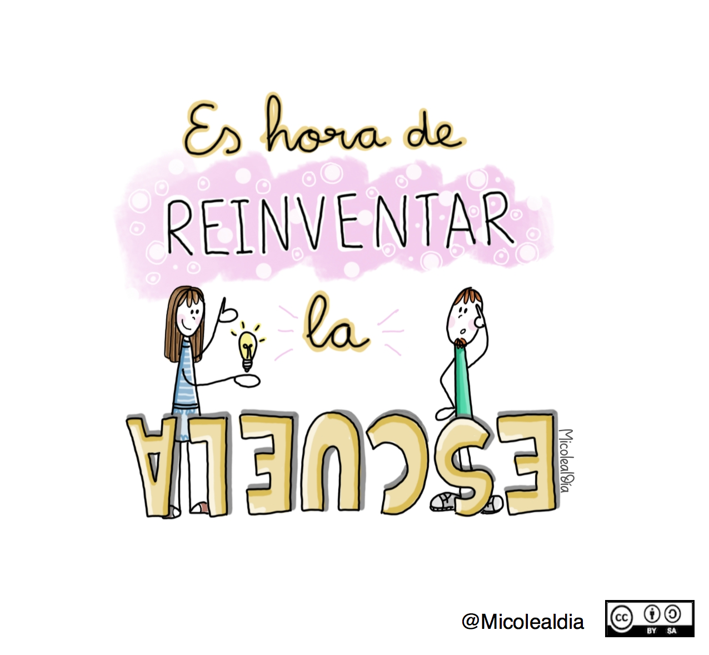

Waifer X. Teclas de logaritmo en calculadora(CC BY)Este apartado de la unidad vamos a aprenderlo de una forma distinta, ¡los temidos logaritmos! Pero no tengáis miedo, no hay motivo. Ya veréis que con poco de esfuerzo, apoyo entre compañeros/as y con la guía y apoyo del profesor, os va a resultar muy fácil o incluso divertido. Para empezar, tenemos que pasar a la próxima sección e ir visualizando los distintos contenidos y trabajando las actividades indicadas. No olvides que para cualquier duda estoy aquí para ayudarte ¡Adelante!
Consejería de Educación y Empleo de la Junta de Extremadura. Reinventar la escuela(CC BY)